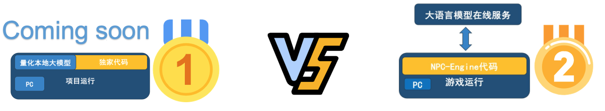

🎮 NPC-Engine 🚀
NPC-Engine 是一个由 CogniMatrix™️ 提供的游戏AI引擎，它赋予游戏AI以群体智能。
引擎简介
CogniMatrix™️ NPC-Engine 是一个解耦地通过UDP数据包传输来为游戏NPC提供对话、动作决策功能的组件。
产品的设计理念是："低成本，本地化“。
我们希望通过最小的成本，最简单的配置，最快的部署，来实现一个可以用于单机游戏、社会模拟、数字员工等多种场景的NPC引擎。
项目阶段
方案1⃣️: 线上API模式(已实现)
线上API模式会产生一定延迟和持续的费用，这对于单机游戏来说是难以接受的。 但是这种模式对配置要求较低，不会占用额外的GPU资源，可以用于快速验证引擎的功能和轻量RPG游戏。
方案2⃣️: 本地化模式(开发中)
本地化模式会在本地运行若干小LLM，针对不同级别的NPC调用进行负载均衡。 不会产生任何网络调用，但对配置要求较高，且本地LLM效果不如线上LLM。
方案3⃣️: 混合模式(开发中)
混合模式中，本地LLM、线上LLM和历史缓存都会被用于NPC的行为决策，以达到最佳的性能、体验、成本的均衡。

开发者安装
本项目免安装，直接在发行版中运行start_engine.bat脚本就可以
项目进展
🚀 开发进度：
- [x] 🔨 工程化代码
- [ ] 🧪 完成测试用例 (进行中)
- [x] 🤖 NPC决策
- [ ] 💬 添加单人对话
- [ ] 📝 完善文档 (进行中)
- [x] 🗃️ 本地向量数据库
- [x] 🧠 本地embedding模型
- [ ] 💡 添加基于embedding搜索的action决策
- [ ] 🔄 场景切换的大模型功能
🎉 项目里程碑
- 🗓️ 2023年6月: 项目开始，实现对话房间功能
- 🗓️ 2023年7/8月: 实现NPC action功能
- 🎈 2023年9月16日: DEMO小镇运行成功，代码初步可用
🏆 获得荣誉
- 🥈 2023年8月: 获得国科大创新创业大赛二等奖
- 🎖️ 2023年9月: 获得面壁智能hackthon挑战赛优胜奖
🔔 请持续关注我们的项目，以获取最新的进展和更新！